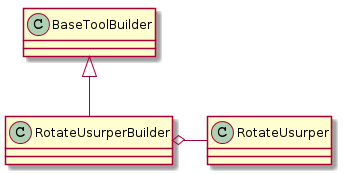

Rotate Builder
A module to build a rotate object.
COLON = ":"
class RotateBuilderEnums(object):
"""
A holder of Rotate constants
"""
__slots__ = ()
angle_velocity = 'angle_velocity'
# end class RotateBuilderEnums
Rotate Parameters
The RotateParameters is a named tuple that should be passed into the RotateCommand’s call method.
class RotateParameters(namedtuple("RotateParameters", "angle velocity clock
wise".split())):
__slots__ = ()
def __str__(self):
return "angle: {0} velocity: {1} clockwise: {2}".format(self.angle,
self.velocity,
self.clockw
ise)
# end class RotateParameters
RotateBuilder
The RotateBuilder builds the RotateCommand.

RotateUsurperBuilderConstants
class RotateUsurperConstants(object):
"""
Constants for users
"""
__slots__ = ()
name = ROTATE_USURPER_NAME
section = 'ROTATE_CUBE'
tables_option = 'tables'
hostname_option = 'hostname'
username_option = 'username'
password_option = 'password'
The RotateUsurperConstants correspond to a config-file that has something like this:
[ROTATE_CUBE]
tables = table1, table2
[table1]
hostname = garbage
username = man
[table2]
hostname = apple
username = banana
password = pickle
The RotateUsurperBuilder
Builds the newer rotate command.
